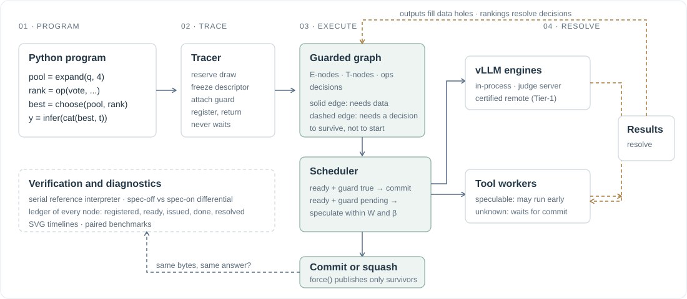

Architecture¶
This page walks one program through the whole system. It introduces every major component and the vocabulary the rest of the manual uses. Each later page in How it works zooms into one stage.

{kind=link}
0. The problem AgentIR solves¶
An agent that scales at test time repeats one pattern: generate candidates, evaluate them, select, continue. The evaluation is a decision, and decisions take time. A judge model reads three answers and writes a verdict; a voting function waits for the slowest sample; a critic decides whether to iterate again. During every one of these waits, the work that comes next is fully specified but cannot start, because ordinary Python needs the decision's value to know which continuation to build.
The observation behind AgentIR is that the decision is usually not a data dependency. The continuation of candidate A needs A's text. It does not need the judge's verdict to construct its prompt; it needs the verdict only to know whether its result should be kept. AgentIR calls this a weak control dependency and turns it into runtime slack: build all possible continuations, run them early, keep one.
Three requirements follow, and they shape everything in the design:
- Soundness. A speculatively executed request must produce exactly the bytes it would produce if it ran after the decision. Otherwise speculation changes the answer.
- Bounded cost. Speculation must never starve committed work, and losing work must be cancelled promptly.
- Verifiability. It must be possible to prove, on a real engine, that a run with speculation and a run without produced the same committed computation.
1. The program¶
You write ordinary Python against a small DSL. Here is a complete program: four samples, a vote, and an explanation of the winner.
from collections import Counter
from agentir import cat, choose, collect, expand, force, infer, lit, op, out_text
def rank_by_vote(answers):
counts = Counter(a.strip() for a in answers)
return sorted(range(len(answers)), key=lambda i: -counts[answers[i].strip()])
def program():
prompt = lit("Q: A pen costs 3 dollars. What do 5 pens cost? Answer with the number.\nA:")
candidates = expand(prompt, 4, max_tokens=32)
answers = collect([out_text(c) for c in candidates])
ranking = op(rank_by_vote, answers, pure=True)
selected = choose(candidates, by=ranking, k=1)[0]
explanation = infer(cat(selected, lit("\nExplain this answer in one sentence:")), max_tokens=64)
return force(out_text(explanation))
Nothing in the program mentions speculation. It uses three kinds of value, which are the subject of Programs and handles:
| Handle | What it stands for | Made by |
|---|---|---|
Seq |
A token sequence: a prompt, or a prompt plus generated output. Content is never readable directly. | lit, cat, infer, expand |
Val |
A future Python value on the control plane, with the world it belongs to attached. | op, collect, out_text, text |
Choice |
"Whichever pool member decision d ranks r-th". A placeholder that never blocks. | choose, gate |
The one rule that makes the design work: selection routes by index. choose hands back positions into a pool of handles that already exist. The ranking function can compute anything it likes, but it cannot invent a new candidate. This is why every possible continuation can be constructed before the ranking is known.
2. The tracer¶
runtime.run(program) executes program on a tracer thread. Each DSL call does five things in microseconds and returns:
- Reserve a draw. A
DrawIdnames one logical random draw by program position: lexical call site, loop path, occurrence count, lane. This happens before any guard is consulted, so identity depends only on where the call is, never on timing. - Freeze the descriptor. The prompt spine (literals plus symbolic references to other nodes' outputs), model role, sampling parameters, and observation mode hash into a
NodeId. The seed is derived from the NodeId. - Attach the guard. The ambient guard is a conjunction of decision literals: the conditions under which this node's world exists.
- Register the record with the scheduler.
- Return a handle and keep executing user code.
The interesting case is infer(cat(selected, ...)) where selected is an unresolved Choice. The tracer performs the hoist: it registers one continuation per pool member, each guarded by the literal "decision d ranks this member first", all sharing one DrawId. This is the single mechanism that creates branch speculation, and The tracer explains it in detail together with gate, loop, and the pacing that keeps unrolling bounded. Identity and guards covers the identity ladder and the four-valued guard algebra.
3. The scheduler and the engines¶
The scheduler runs on one asyncio thread. For each registered record it asks two questions: is the data ready (every referenced output exists), and what is the guard's state?
| Data | Guard | Action |
|---|---|---|
| ready | true | issue as committed work, engine priority 0 |
| ready | pending | issue speculatively if depth ≤ window W and speculative in-flight < budget β |
| not ready | any | wait for producers |
| any | false or failed | squash: abort the attempt, keep the bytes unpublished |
Committed work always preempts speculative work on a full engine; the reverse never happens. Among speculative candidates the order is: demanded first, shallow before deep, structurally likely before unlikely, higher advisory hint first, then registration order. A speculative attempt that fails simply returns the record to pending; only under a true guard do engine errors become program errors. Engine death is process-wide, so it fences every request of that engine's epoch, drains them, and rebuilds once. All of this is in The scheduler.
Physical execution goes through an engine adapter with one interface: stream(prompt, params, seed, priority, request_id), abort on cancel. Three adapters exist: in-process vLLM, a judge server subprocess, and a certified remote vLLM server. Prompts travel on a wire, either strings or exact token-id tuples. Tools run on a separate tool scheduler with committed-first queues. See Engine adapters and Tools and the tool loop.
4. Resolving, committing, publishing¶
When an engine request finishes, its output fills the corresponding Out hole; children become data-ready even if their own guards are still pending, so speculation can chain to depth W. When the vote in the example resolves, the decision's callbacks re-evaluate every guard that mentions it: the winner's explanation commits, the other three squash, and any that are still running are aborted.
force(x) is the publication boundary. It waits for x's data and for its guard to be true, so a losing world can never leak into the return value. A false guard raises Squashed; a failed one re-raises the deciding computation's own exception. Python ops declared pure=True may run on speculative data; the default op is an effect barrier that waits for commitment, as do tools with unknown effects. Runtime.run does not return until every committed effect obligation has executed.
5. Verification and diagnostics¶
Every record writes a ledger row: when it was registered, became data-ready, was issued, produced its first token, finished, and had its guard resolved, plus token counts and a disposition of committed, wasted, or failed. render_timeline turns a ledger into an SVG Gantt chart.
Two differential gates establish correctness on a real engine. Gate A runs the program with speculation off and replays its recorded outputs through an independent serial reference interpreter that never hoists; the answers and the per-draw traces must agree. Gate B runs a fresh speculation-on runtime and demands that every committed node has identical bytes. agentir check runs both. Verification explains what each gate can and cannot prove.
Package map¶
| Package | Responsibility | Read |
|---|---|---|
agentir.core |
Spine algebra, identity hashing, guards, handles, wires, exceptions | Identity and guards |
agentir.tracing |
The DSL, the trace context, the tool loop, observation policies, predictors | The tracer, Tools |
agentir.execution |
Scheduler, runtime, engine adapters, tool execution, streaming parsers | The scheduler, Engine adapters |
agentir.compile |
Static shape tracing and funding plans, no engine needed | Static shape compilation |
agentir.algos |
Eight test-time-scaling algorithms written in the DSL | Built-in algorithms |
agentir.diagnostics |
Serial reference, differentials, tool audit, SVG timelines | Verification, Diagnostics |
agentir.bench |
Datasets, benchmark runner, paired statistics, telemetry | Benchmarking |
agentir.integrations.harbor |
Terminal-Bench agent over Harbor | Harbor |
Continue with Programs and handles, or skip to installation to run the example.